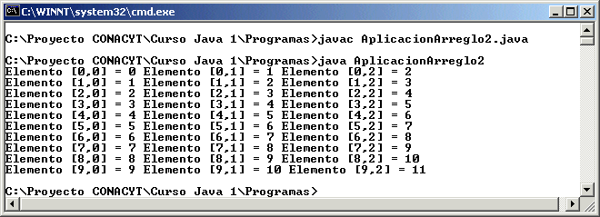
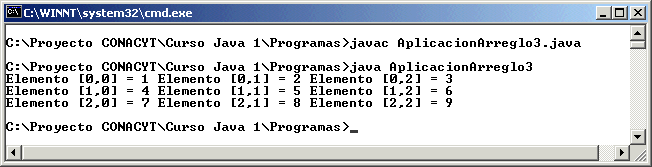
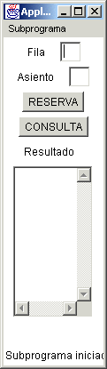

Módulo 6:
Arreglos 
2. Arreglos de dos Dimensiones
¿Porqué un arreglo de dos dimensiones?
Un arreglo de dos dimensiones lo utilizamos para manejar un arreglo dentro de otro arreglo, por ejemplo queremos administrar las reservaciones de asientos en varias hileras, es entonces que nos conviene utilizar un arreglo de dos dimensiones.
Declaración de arreglos de dos dimensiones
Para declarar un arreglo se utiliza el siguiente formato:
tipo arreglo [][] = new tipo[renglones][columnas];
donde tipo es el tipo de los datos que almacenará el arreglo. Es
importante mencionar que se pueden declarar arreglos de los tipos
primitivos de Java, o bien como objetos de Clases definidas por el usuario.
Renglones representa la cantidad de hileras que se reservan para el arreglo y columnas es el número de columnas por renglón. En Java todos los arreglos empiezan en el subíndice 0 como renglon y 0 como columna y llegan al subíndice renglones-1, en los renglones y columnas-1 en las columnas.
Por ejemplo:
int arr[][] = new int[6][3]; // arreglo de enteros de 6 renglones, por 3 columnaschar cad[][] = new char[10][2]; // arreglo de tipo caracter con 10 renglones y 2 columnas.
Uso de los elementos del arreglo
Para usar los elementos individuales de un arreglo se usa el siguiente formato:
arreglo[subíndice-renglon][subindice-columna]
Como un elemento de un arreglo es un dato, se puede usar como cualquier variable de ese tipo; Enseguida se pueden ver algunos ejemplos:
int arr[][] = new int [4][2];
arr[3][1] = 8;
arr[2][0] = Integer.parseInt(t1.getText());
t2.setText("" + arr[0][0]);
arr[0][1] = arr[0][1] + arr[0][2];
int k = 2; int l = 1;
arr[k][l] = 20;
Ejemplo:
import java.io.*;
public class AplicacionArreglo2 {
public static void main(String[] args) {
int arreglo[][] = new int [10][3];
for (int i=0; i<10; i++) {
for (int j=0; j< 3; j++) {
arreglo [i][j] = i+j;
}
}
for (int i=0; i<10; i++) {
for (int j=0; j<3; j++) {
System.out.print("Elemento [" + i + "," + j + "] = " + arreglo[i][j] + " ");
}
System.out.println();
}
}
}
El cual desplegara lo siguiente en ejecución:

Inicializar arreglos en la declaración
En Java es posible inicializar un arreglo de dos dimensiones al declararlo; esto se hace sin definir el número de elementos y colocando un operador de asignación y después entre llaves la lista de valores para el arreglo separados por comas, veamos los siguientes ejemplos:
double arreglo[][] = {{2.4, -3.2, 0.0 },{ 23.5, 54.22, 78}};char cadena[][] = {{‘a’, ‘b’, ‘c’, ‘d’},{‘e’, ‘f’, ‘g’, ‘h’},{‘i’, ‘j’, ‘k’, ‘l’}};
En Java es posible saber el número de renglones del arreglo utilizando el nombre del arreglo un punto y la palabra length, asi como el número de columnas utilizando el nombre del arreglo un subindice (casi siempre el cero) y luego del punto la palabra length, como se muestra en el siguiente ejemplo:
import java.io.*;
public class AplicacionArreglo3 {
public static void main(String[] args) {
int arreglo[][] = {{1,2,3},{4,5,6},{7,8,9}};
for (int i=0; i<arreglo.length; i++) {
for (int j=0; j<arreglo[0].length; j++) {
System.out.print("Elemento [" + i + "," + j + "] = " + arreglo[i][j] + " ");
}
System.out.println();
}
}
}
La cual presenta la siguiente ejecución:

El manejar mas de una dimension es tan sencillo como manejar una, debes tener cuidado con los subíndices, ya que al igual que en una sola dimensión, puede ser que uno de los subíndices este fuera del numero de renglones o columnas disponibles, según sea el caso.
1. Elabora un applet en el que se tenga el numero de fila y el numero de asientos como campo texto, una área de texto para mandar mensajes y los botones RESERVA y CONSULTA. RESERVA reservara la fila (máximo 10) y el asiento (máximo 30) para un teatro, si ese asiento ya está ocupado mandará el mensaje correspondiente, en caso que este libre mandará mensaje "LISTO" (los mensajes serán en el área de texto) y lo reservará en un arreglo de dos dimensiones. CONSULTA tomará el número de fila (máximo 10) y el asiento (máximo 30) y revisará si ese asiento esta ocupado o desocupado, mandando el mensaje apropiado en el área de texto. El arreglo de asientos debe inicializarse para que estén todos los asientos desocupados al inicio, parecido al que se muestra en la figura:

http://java.sun.com/docs/books/tutorial/java/data/multiarrays.html